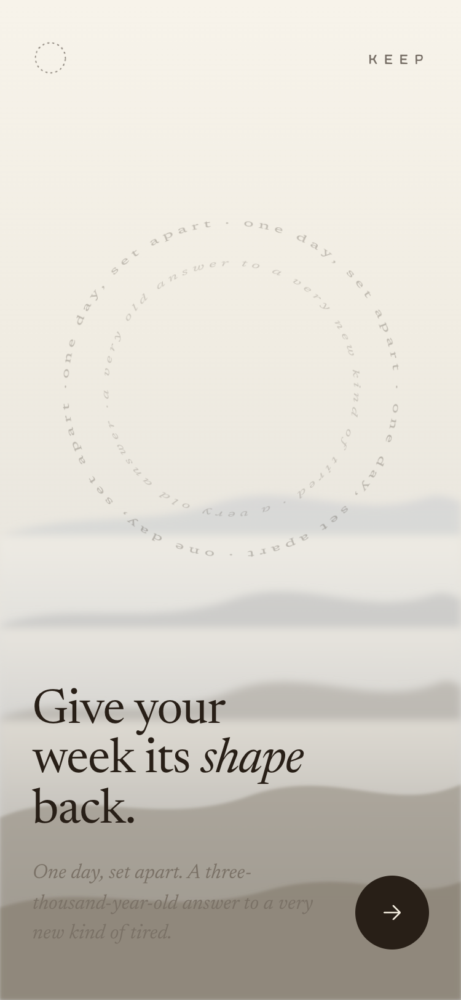
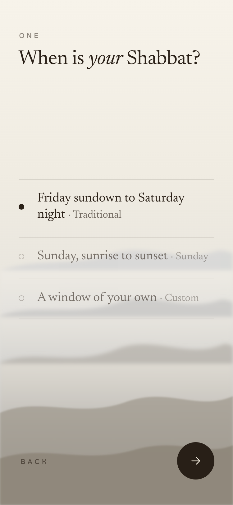
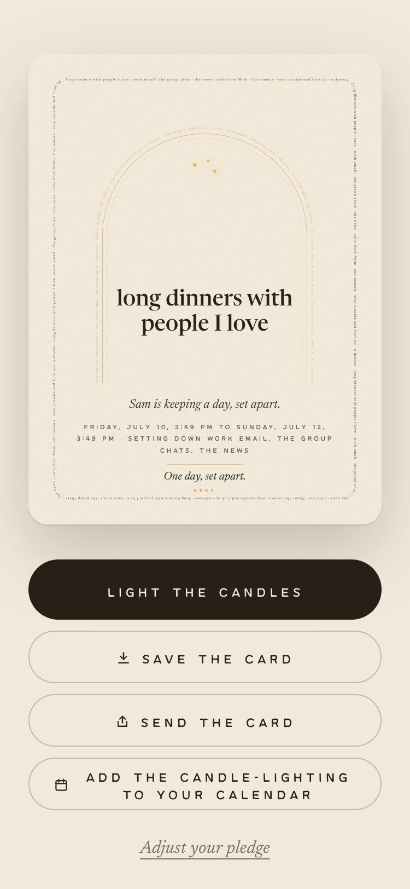
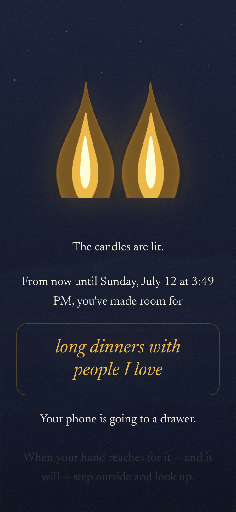
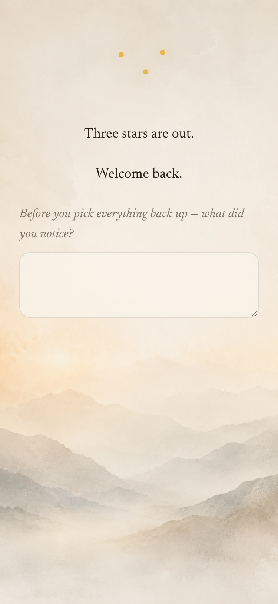

Common Era · A prototype walkthrough
Keep
working title — still exploring the name
One day, set apart.
An old answer to a new kind of tired.
The problem
The week has lost its edges.
Everyone has seen their screen-time report and flinched. But the ache underneath isn't too much phone — it's that no day is any different from the one before it.
The tiredness isn't from working too hard. It's from never being off.
seven days · no seam between them
The reframe
Rest is everywhere.
A boundary is not.
Calm, quiet, unwind — every app is already on that shelf. What none of them draws is the line that sets one day apart from the grey of the other six.
Boundaries are how we make meaning.
The old answer
One day. A wall around it. Kept.
Humanity settled this a long time ago — one day in seven, set apart, and kept in common. Three thousand years old, and it still works. No belief required to feel it.
six ordinary days · one kept
The difference
Not a blocker. A covenant.
Every other app technical
- Locks you out
- Counts your minutes
- Shames you the moment you slip
Keep covenantal
- You give your word
- It holds the day with you
- It leaves you something to keep
The difference is the whole product.
The ritual, end to end
Five moments.
Let's walk them.
Built and running. Everything ahead is the real prototype — captured from the working build, not mocked.
The screens · the invitation
It opens like an invitation, not a settings page.
The first thing you meet is your own words, already circling. No counters, no shame — just a question worth answering: what would one set-apart day give back to your week?
landing · the front door

The screens · you design it
You build the day. In under five minutes.
When it begins. What you're setting down — some apps, all of them, or everything with your own exceptions. What you're making room for. Boundaries with doors you built yourself hold better than walls.
design · your window, your terms

The screens · the pledge
Your word becomes an object.
The border of the card is your own pledge, set in miniature. The thing you'd screenshot and send is the same thing that holds you to the day — a keepsake before the day has even begun.
pledge · your promise, in your own words

The heart of it
The candle is a door, not a button.
You light it. The screen goes dark and stays dark. No cancel, no confirm — the phone's last act is to teach you to set it down. A crossing you can't un-cross.
candle · two flames, the one-way door

The part no one else built
A way back out.
Blockers just let you fail back into the feed. Keep walks you back — three stars, a breath, and one question: what are you carrying into the week? That exit is why the day sticks.
havdalah · three stars, the day complete

The keepsake
A mosaic, not a streak.
A streak shames you the week you miss. A mosaic only grows. Every kept week lays one tile; miss a week and nothing breaks — you simply don't add a stone. Many flames, no leaderboard.
each tile is a week you kept
The name · working
Keep.
Say the ordinary word, mean the quiet one. It reads to those who feel it, and stays plain for everyone else.
Still exploring — the name isn't settled, and it changes in one line of code.
Keep a promise.
Keep a day.
A keepsake.
Keep the sabbath.
Where it is
Built. Working. Yours to try.
Real now
- The full ritual arc, running as a PWA
- The pledge, in the user's own words
- Two flames, the shader, the dark
- The growing mosaic
Still shaping
- Motion and final polish
- The optional "go deeper" door
- The communal layer — many flames
Open together: the name, the domain, and how much of the communal layer belongs in v1.
Give your week its shape back.
Keep
Try it without me in the room → [ paste the live prototype link here ]